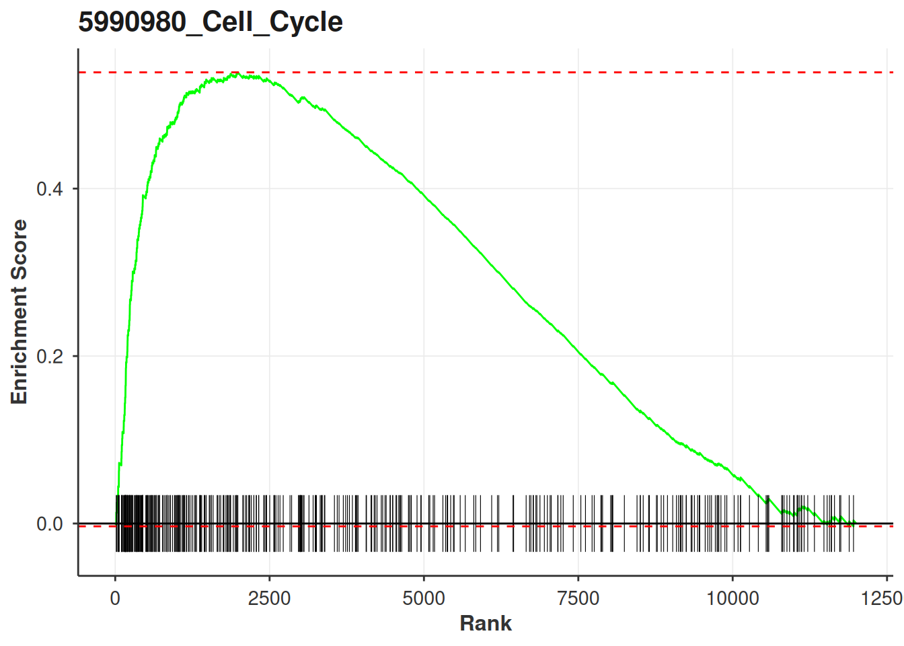
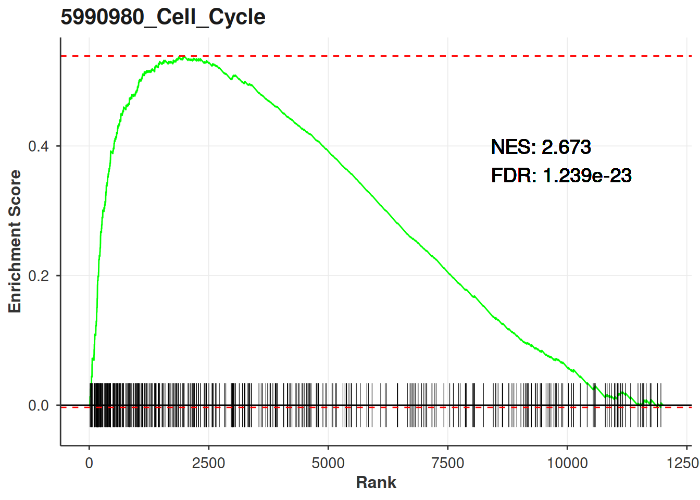
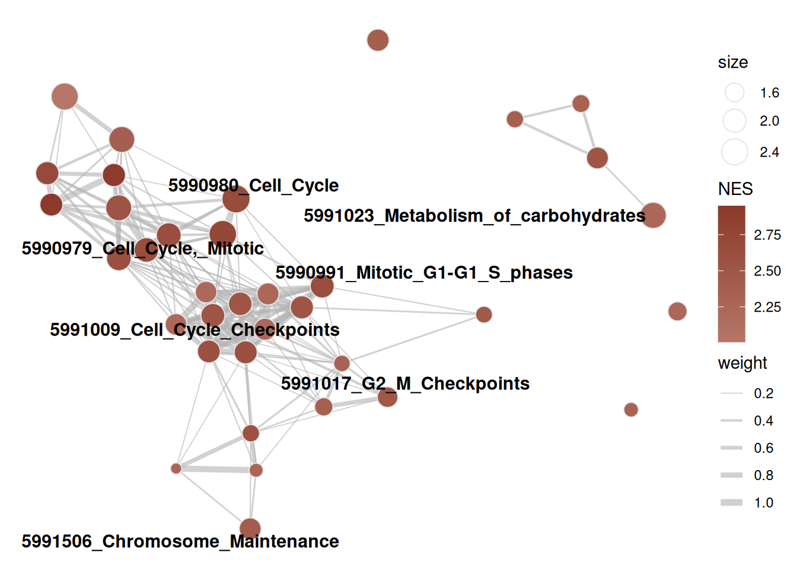
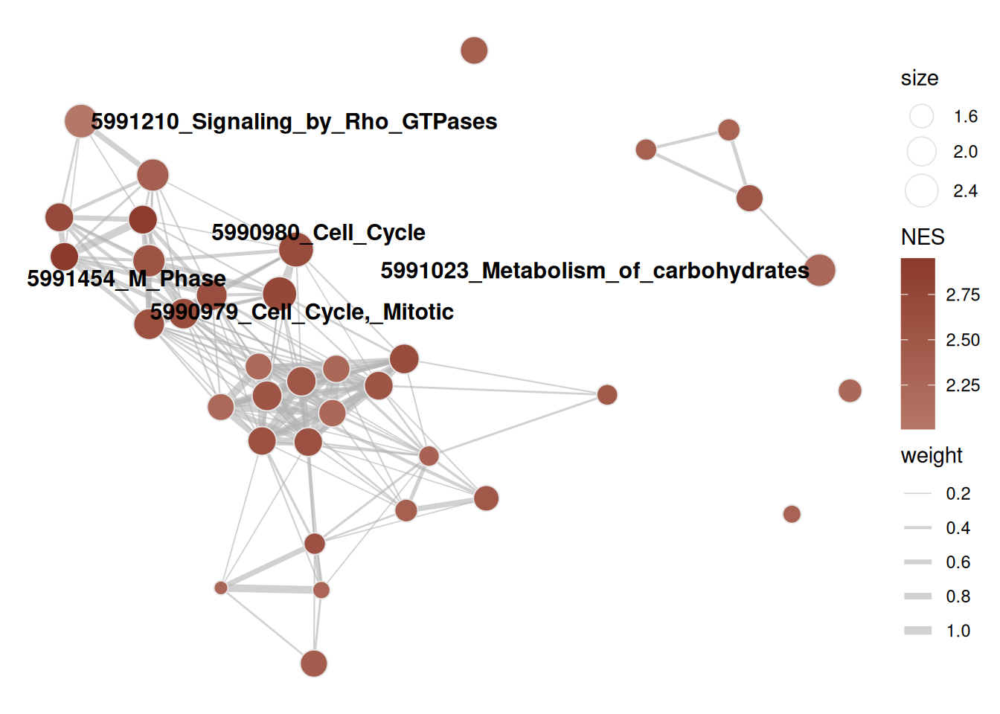
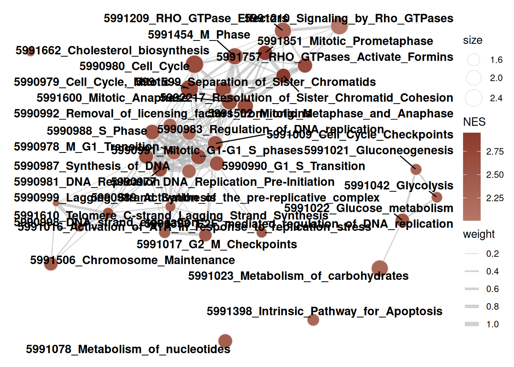
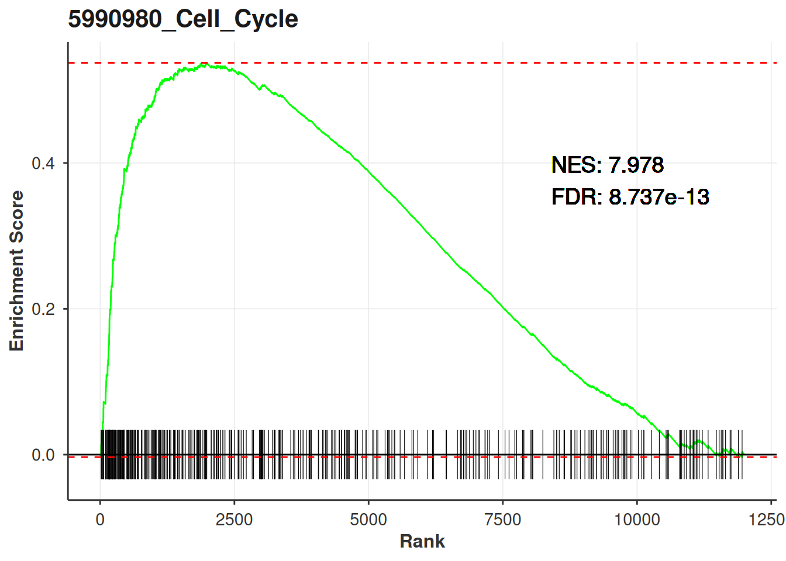
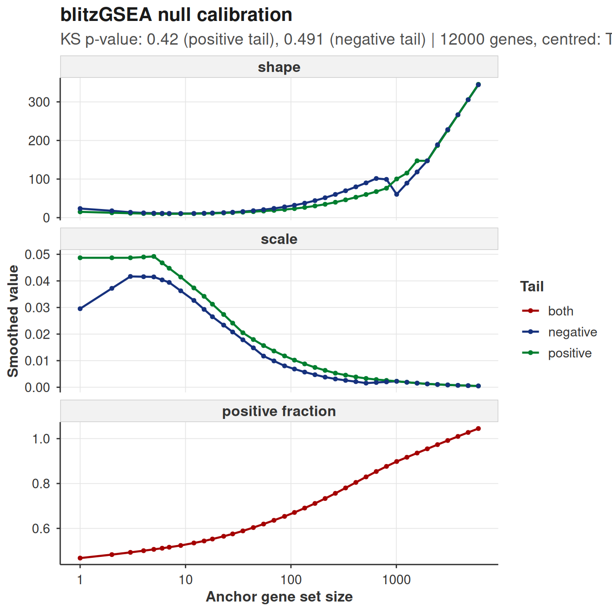
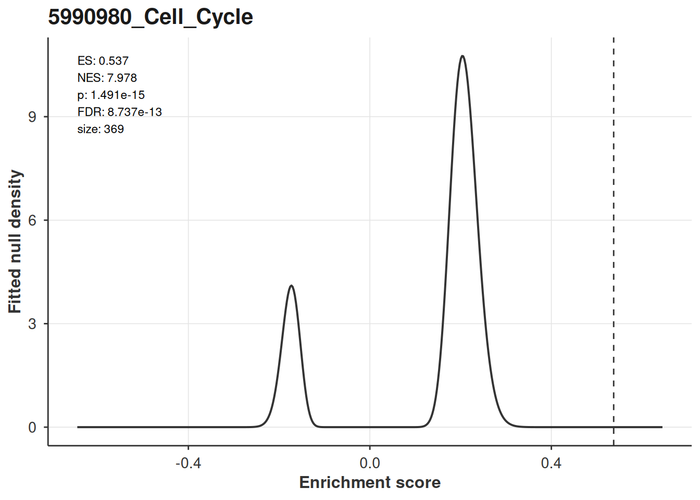
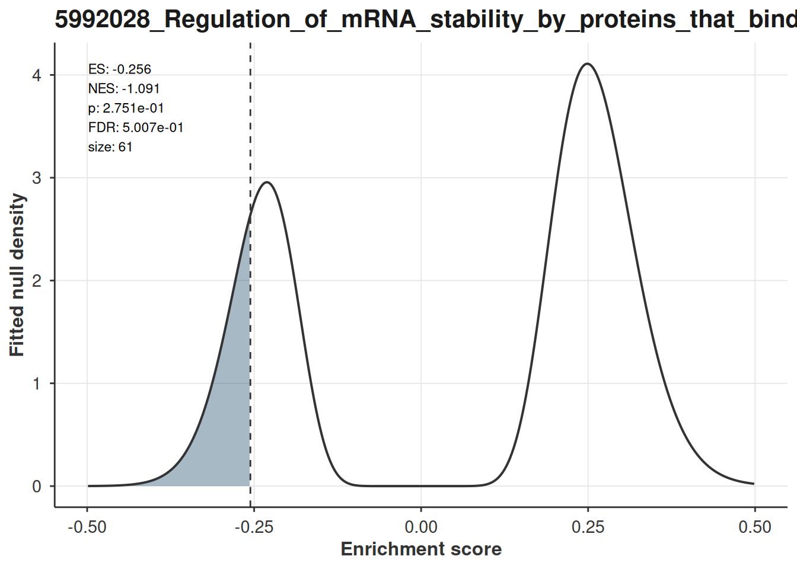

library(bixverse)
library(bixverse.plots)
library(data.table)
#>
#> Attaching package: 'data.table'
#> The following object is masked from 'package:base':
#>
#> %notin%
library(ggplot2)
library(magrittr)Visualising GSEA results
2026-09-04
Intro
bixverse gives you ranked gene set enrichment through calc_fgsea() and calc_blitzgsea(). This vignette covers what to do with the results: running enrichment curves, enrichment maps, and the calibration diagnostics that only blitzGSEA has.
For the methods themselves, see the gene set enrichment vignette in the parent package. This one assumes you already have results in hand.
The data
fgsea ships a mouse ranked list and a set of Reactome pathways. 12,000 genes, 586 pathways, and enough real signal to make the plots worth looking at.
data(examplePathways, package = "fgsea")
data(exampleRanks, package = "fgsea")
stats <- sort(exampleRanks, decreasing = TRUE)
gsea_res <- calc_fgsea(
stats = stats,
pathways = examplePathways,
gsea_params = params_gsea(min_size = 15L)
)
head(gsea_res[, .(pathway_name, es, nes, pvals, fdr)])
#> pathway_name es nes
#> <char> <num> <num>
#> 1: 5990980_Cell_Cycle 0.5388497 2.673307
#> 2: 5990979_Cell_Cycle,_Mitotic 0.5594755 2.740700
#> 3: 5991851_Mitotic_Prometaphase 0.7253270 2.933140
#> 4: 5992217_Resolution_of_Sister_Chromatid_Cohesion 0.7347987 2.948932
#> 5: 5991599_Separation_of_Sister_Chromatids 0.6164600 2.661126
#> 6: 5991454_M_Phase 0.5576247 2.544186
#> pvals fdr
#> <num> <num>
#> 1: 4.157296e-26 1.239167e-23
#> 2: 4.229239e-26 1.239167e-23
#> 3: 9.357720e-19 1.827875e-16
#> 4: 1.027876e-17 1.505838e-15
#> 5: 1.701775e-14 1.994480e-12
#> 6: 2.221182e-14 2.169354e-12Enrichment plots
plot_gsea_enrichment() draws the classical GSEA figure: the running enrichment score across the ranked list, a rug of where the pathway genes sit, and the ranked statistic underneath. It returns a named list, one ggplot per pathway, so you can plot a handful in one call.
top_pathways <- gsea_res[1:2, pathway_name]
plots <- plot_gsea_enrichment(
stats = stats,
pathways = examplePathways,
pathways_of_interest = top_pathways
)
plots[[1]]
Hand it the results table as well and it annotates each panel with the NES and FDR. Worth doing: a running score curve on its own tells you the shape of the enrichment but nothing about whether it is significant.
plots <- plot_gsea_enrichment(
stats = stats,
pathways = examplePathways,
pathways_of_interest = top_pathways,
gsea_results = gsea_res
)
plots[[1]]
Key arguments:
| Argument | Description |
|---|---|
stats |
Named numeric vector of the gene level statistic. Sort it descending. |
pathways |
The full named list you ran the enrichment on, not just the ones you are plotting. |
pathways_of_interest |
Which pathways to draw. Every one has to be in names(pathways). |
gsea_results |
Optional. Needs pathway_name, nes and fdr, which is what calc_fgsea() and calc_blitzgsea() both return. |
tick_size |
Height of the rug ticks. |
text_size |
Size of the NES/FDR annotation. Only does anything when gsea_results is given. |
Note the size filter: the function drops pathways with fewer than three genes present in stats, and they disappear from the returned list without comment. If you get back fewer plots than you asked for, that is why.
Extracting the plotting data
Alternatively, you can pull the underlying data out and build your own plot. get_gsea_enrichment_data() returns the curve, the tick positions and the key points per pathway.
enrichment_data <- get_gsea_enrichment_data(
stats = stats,
pathways = examplePathways,
pathways_of_interest = top_pathways,
gsea_results = gsea_res
)
str(enrichment_data[[1]], max.level = 1)
#> List of 5
#> $ curve_dt :Classes 'data.table' and 'data.frame': 740 obs. of 2 variables:
#> ..- attr(*, ".internal.selfref")=<pointer: 0x555d8f78fb80>
#> $ ticks_dt :Classes 'data.table' and 'data.frame': 369 obs. of 2 variables:
#> ..- attr(*, ".internal.selfref")=<pointer: 0x555d8f78fb80>
#> $ stats_dt :Classes 'data.table' and 'data.frame': 12000 obs. of 2 variables:
#> ..- attr(*, ".internal.selfref")=<pointer: 0x555d8f78fb80>
#> $ key_points : Named num [1:5] 5.39e-01 -3.38e-03 5.42e-01 2.67 1.24e-23
#> ..- attr(*, "names")= chr [1:5] "pos_es" "neg_es" "spread_es" "nes" ...
#> $ additional_label: logi TRUE
#> - attr(*, "class")= chr "gsea_par_plot_data"
head(enrichment_data[[1]]$curve_dt)
#> rank ES
#> <num> <num>
#> 1: 0 0.000000000
#> 2: 16 -0.001375634
#> 3: 17 0.013232526
#> 4: 24 0.012630686
#> 5: 25 0.024877964
#> 6: 42 0.023416353Enrichment maps
Ranked enrichment on a library like Reactome gives you a lot of hits that are mostly the same genes wearing different names. An enrichment map makes that redundancy visible: gene sets become nodes, similarity between them becomes edges, and Louvain clustering groups the ones that are telling you the same thing.
enrichment_map_gsea() builds the igraph. It takes calc_fgsea() output directly.
enrichment_map <- enrichment_map_gsea(
res = gsea_res,
threshold = 1e-4,
pathways = examplePathways,
min_sim = 0.2,
resolution = 1.0
)
enrichment_map
#> IGRAPH 3826639 UNW- 36 172 --
#> + attr: layout (g/n), color_type (g/c), name (v/c), size (v/n),
#> | community (v/n), label (v/c), nes (v/n), color_value (v/n), weight
#> | (e/n)
#> + edges from 3826639 (vertex names):
#> [1] 5990977_DNA_Replication_Pre-Initiation--5990978_M_G1_Transition
#> [2] 5990981_DNA_Replication --5990977_DNA_Replication_Pre-Initiation
#> [3] 5990977_DNA_Replication_Pre-Initiation--5990983_Regulation_of_DNA_replication
#> [4] 5990987_Synthesis_of_DNA --5990977_DNA_Replication_Pre-Initiation
#> [5] 5990988_S_Phase --5990977_DNA_Replication_Pre-Initiation
#> + ... omitted several edgesNodes are sized by log10 of the gene set size and coloured by NES. The graph carries its own layout, so the two renderers below agree on where things sit.
plot_enrichment_map_ggraph(enrichment_map, label_nodes = "adaptive")
#> Warning: Removed 29 rows containing missing values or values outside the scale range
#> (`geom_text_repel()`).
Labelling is the part you will actually tune. "adaptive" scales the number of labels to the community size, which keeps big clusters readable; "all" labels everything and works up to maybe thirty nodes; an integer takes the top N by node size; NULL drops labels entirely.
plot_enrichment_map_ggraph(enrichment_map, label_nodes = 5L)
#> Warning: Removed 31 rows containing missing values or values outside the scale range
#> (`geom_text_repel()`).
Long Reactome names need wrapping. ... goes straight to wrap_and_truncate(), so width and max_lines are set when you build the graph, not when you plot it.
enrichment_map_short <- enrichment_map_gsea(
res = gsea_res,
threshold = 1e-4,
pathways = examplePathways,
width = 25L,
max_lines = 2L
)
plot_enrichment_map_ggraph(enrichment_map_short, label_nodes = "all")
For anything beyond a handful of nodes the static version stops being useful and you want to hover. plot_enrichment_map_visnetwork() takes the same graph and gives you an interactive widget, same colours and same layout.
plot_enrichment_map_visnetwork(enrichment_map)blitzGSEA
blitzGSEA calibrates a gamma null once against the signature and then reads every pathway’s p-value off the fitted tail. Cost per pathway collapses, which is what makes it worth using on large libraries. The results table has the same pathway_name, nes and fdr columns as calc_fgsea(), so everything above works on it unchanged.
blitz_params <- params_blitzgsea(min_size = 15L)
null_model <- blitzgsea_calibrate(
stats = stats,
blitz_params = blitz_params
)
blitz_res <- calc_blitzgsea(
stats = stats,
pathways = examplePathways,
blitz_params = blitz_params,
null_model = null_model
)
head(blitz_res[, .(pathway_name, es, nes, pvals, fdr, size)])
#> pathway_name es nes
#> <char> <num> <num>
#> 1: 5990980_Cell_Cycle 0.5373426 7.977693
#> 2: 5990979_Cell_Cycle,_Mitotic 0.5579853 7.860540
#> 3: 5991454_M_Phase 0.5558732 5.985000
#> 4: 5991851_Mitotic_Prometaphase 0.7243143 5.964933
#> 5: 5992217_Resolution_of_Sister_Chromatid_Cohesion 0.7337666 5.803762
#> 6: 5991502_Mitotic_Metaphase_and_Anaphase 0.6038215 5.697086
#> pvals fdr size
#> <num> <num> <num>
#> 1: 1.490940e-15 8.736906e-13 369
#> 2: 3.824815e-15 1.120671e-12 317
#> 3: 2.163902e-09 3.585367e-07 173
#> 4: 2.447350e-09 3.585367e-07 82
#> 5: 6.484348e-09 7.599656e-07 74
#> 6: 1.218724e-08 1.033659e-06 123Centre your stats before drawing the curve
One trap. params_blitzgsea() defaults to centre = TRUE, and the enrichment score is not invariant to an offset: the walk weights each gene by |stat|^p, so shifting the statistic changes the score. plot_gsea_enrichment() draws the uncentred walk. Hand it the raw ranks next to calc_blitzgsea() output and the curve peaks somewhere other than the es in the table.
Subtract the mean and they line up exactly:
top_blitz <- blitz_res[1, pathway_name]
peak_of <- function(s) {
d <- get_gsea_enrichment_data(
stats = s,
pathways = examplePathways,
pathways_of_interest = top_blitz
)
kp <- d[[1]]$key_points
kp[which.max(abs(kp[c("pos_es", "neg_es")]))]
}
c(
reported = blitz_res[1, es],
raw = peak_of(stats),
centred = peak_of(stats - mean(stats))
)
#> reported raw.pos_es centred.pos_es
#> 0.5373426 0.5388497 0.5373426So centre first:
plot_gsea_enrichment(
stats = stats - mean(stats),
pathways = examplePathways,
pathways_of_interest = top_blitz,
gsea_results = blitz_res
)[[1]]
Running calc_fgsea() instead? Then leave the stats alone. Only blitzGSEA centres.
Is the calibration any good?
Everything blitzGSEA reports rests on the gamma fits describing the permutation scores. plot_blitzgsea_null() shows the smoothed parameters across the anchor grid, one line per tail, with the Kolmogorov-Smirnov goodness-of-fit p-values in the subtitle.
plot_blitzgsea_null(null_model)
What you want is smooth curves and KS p-values comfortably above 0.05. Sharp kinks or a fit that sags at one end of the size range mean the tails are misbehaving for gene sets of that size, and the p-values there are optimistic. More permutations is the usual fix. calc_blitzgsea() warns on its own when the mean KS p-value drops below 0.05, but the warning is one number for the whole grid and this plot tells you where it went wrong.
The calibration depends only on the signature, never on the library. Score five libraries against one ranking and you pay for this once, which is why blitzgsea_calibrate() hands the null back as a plain list you can saveRDS().
Where the p-value comes from
plot_blitzgsea_es_null() puts the observed score on the fitted null at that pathway’s size, with the tail beyond it shaded. That shaded area, doubled, is the p-value in the results table.
es_plots <- plot_blitzgsea_es_null(
null_model = null_model,
res = blitz_res,
pathways_of_interest = blitz_res[1:2, pathway_name]
)
es_plots[[1]]
The gamma parameters are interpolated log-linearly from the anchor grid to the pathway’s exact size, matching what the Rust does when it scores. This is the fitted density, not a histogram: the permutation draws never leave Rust, so there is no empirical null to overlay on it.
A non-significant pathway looks like what you would expect, the score sitting in the body of the distribution:
boring <- blitz_res[fdr > 0.5][1, pathway_name]
plot_blitzgsea_es_null(
null_model = null_model,
res = blitz_res,
pathways_of_interest = boring
)[[1]]
Related
Over-representation results (hypergeometric tests) get their own plotting helpers, covered in the ORA vignette. Both vignettes use the same dataset, so the enrichment maps there are directly comparable to the ones here.